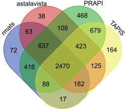
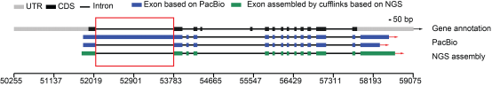

FAQ
Q: Can common RNA-Seq be used for circle RNA identification and differential expression analysis?Q: What's the differents between PRAPI and other tools in terms of alternative splicing identifition?
Q: Can common non-stranded RNA-seq be used for NAT analysis?
Q: How to construct PAS-seq library for APA analysis?
Q: Do I need to correct PacBio reads by ourselves ?
Q: Is there a minimum number of replicates required for differential expression analysis of AS/APA?
Q: Where is the latest version of PRAPI available?
Q: I have further comments/questions. Where can I post them?
A: Circular RNA (circRNA) is mainly generated by the splice donor of a downstream exon joining to an upstream splice acceptor, a phenomenon known as back-splicing. RNase R treatment library or rRNA-depletion RNA-Sequencing (RibominusSeq) can be used for circle RNA identification and differential expression analysis. The availability of above non-polyadenylated transcriptomes data has facilitated the genome-wide identification of thousands of circRNAs.
A: we tested several of them, including TAPIS (Abdel-Ghany et al., 2016), rMATS (Shen et al., 2014), and ASTALAVISTA (Foissac and Sammeth, 2007). The venn diagram showed that most of the results were overlapped.

However，rMATS and ASTALAVISTA do not limit the strand direction during the identification of AS events. PRAPI requires that isoforms have the same transcript orientation during pair-wise comparison.
For the other tools, TAPIS (Abdel-Ghany et al., 2016), identify AS events based on only third generation sequencing, which makes it the natural point of reference tool for our comparisons. However, TAPIS excluded AS events at 5' or 3'-end flanking region. The public evidence suggests that this kind of AS type is real, thus PRAPI includes this AS type at present version.

A: Natural antisense transcripts (NATs) are a group of RNAs encoded within a cell that have transcript complementarity to other RNA transcripts. Thus strand-specific RNA–Seq are required for the analysis of NAT. At present dUTP and SMART are two popular methods for construction of strand-specific RNA–Seq. The RNA was sheared to construct two shotgun and paired-end sequencing libraries following the SMART library protocol (Levin et al., 2010). Briefly, the first-strand cDNAs were synthesized using SMARTScribe reverse transcriptase with an oligonucleotide comprising the first Illumina adaptor with a random hexamer at the 5’ end after the first-strand cDNA synthesis. The first Illumina adaptors were added, and three nontemplate cytosine nucleotides were added at the 3’ end of the first strand cDNA. Then, double-stranded cDNAs were synthesized using an oligonucleotide that contained a second Illumina adaptor with three guanine ribonucleotides.
Levin, J.Z., Yassour, M., Adiconis, X., Nusbaum, C., Thompson, D.A., Friedman, N., Gnirke, A. and Regev, A. (2010) Comprehensive comparative analysis of strand-specific RNA sequencing methods. Nature methods, 7, 709-715.
A: Poly(A) site sequencing can be constructed by following our previous paper (Wang, T., et al. 2017，Zhang Y et al. 2015). Briefly, poly(A) RNAs were purified using an mRNA purification kit (Invitrogen), and heat fragmented at 95°C for 30 min. Reverse transcription (Superscript, Invitrogen) was carried out using our modified HITS-3’ adaptor at 42°C for 30 min, then the HITS-5’ adaptor (a SMART oligo) was added and incubated for an additional 30 min. The cDNAs were purified using a Qiagen PCR Cleanup kit and the second strand cDNAs were synthesized by 3 cycles of PCR using Phusion DNA polymerase (NEB) and the PE1.0 and PE2.0 primers. The PCR products were separated on a 2% agarose gel and the 200-300 bp bands were excised and purified. Gel-extracted DNAs were further amplified by a 13-cycle PCR. The PCR products were purified using a Qiagen PCR Cleanup kit. All tags were reverse-complemented because the tags were sequenced from 3’-end of transcripts. User donot need to do this transfer step since our PRAPI do the entire step for the user. User only needs to provide their original fastq files.
Wang, T., et al. Comprehensive profiling of rhizome‐associated alternative splicing and alternative polyadenylation in moso bamboo (Phyllostachys edulis). The Plant Journal 2017:91(4):684-699.
Zhang Y et al. Integrative genome-wide analysis reveals HLP1, a novel RNA-binding protein， regulates plant flowering by targeted alternative polyadenylation .Cell Research. 2015 Jun 23.
A: At present our PRAPI do nod performance the PacBio Long Read error correction. LSC (https://www.healthcare.uiowa.edu/labs/au/LSC/) is one wonderful software for the PacBio Long Read error correction.
A: Differential analysis requires of at least three replicates per sample.
A:http://www.bioinfor.org/tool/PRAPI/downloads.php always has the link to the latest version of PRAPI.
A: You can post comments or questions to lfgu@fafu.edu.cn or yubanggaofafu@gmail.com.